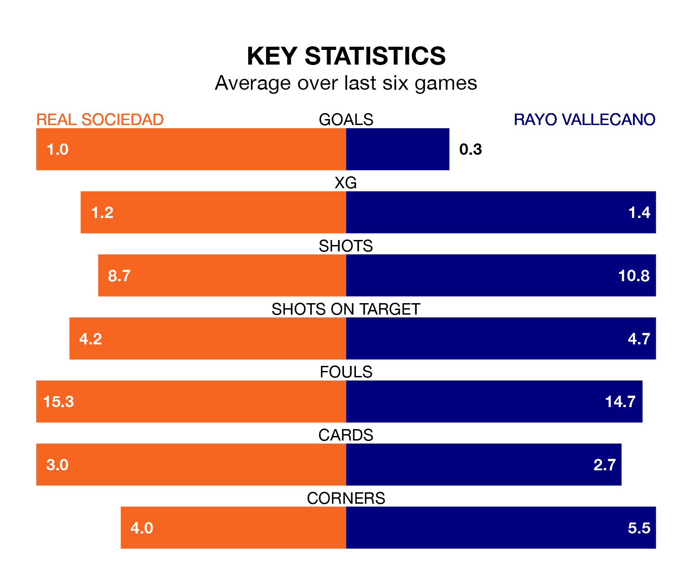

Real Sociedad are heavy favourites to keep all three points at home in Saturday lunchtime's kick-off against Rayo Vallecano.
La Real, who sit sixth in La Liga with 21 games played, are priced at 1.6 to seal victory at the Reale Arena.
Sitting six places and 12 points behind them in the table, Rayo are 5.2 to win with *Betting Company*, while the draw is at 4.1.
With Álex Remiro between the sticks, La Real can rely on one of the league's safest pair of hands. He has kept eight clean sheets in his 20 appearances this season, and only one other 'keeper – Athletic Club Bilbao's Unai Simón – has been able to prevent the opposition scoring on more occasions in La Liga.
In Rayo's net, Stole Dimitrievski also has eight clean sheets in 20 games. He has conceded a goal every 75 minutes, 80% more often than the 134 minutes between goals for Remiro Gargallo.
With 18 goals in 20 games so far this season, the visitors are the league's second-lowest scorers with 0.9 goals per game. And they are conceding at an average rate, letting in 26 goals at a rate of 1.3 per game.
La Real, meanwhile, are above average scorers, with 1.5 goals per game, compared to a league average of 1.3. They have conceded 1.0 goal per game.
In the last 10 years, La Real and Rayo have played each other on 13 occasions. La Real won five of them, Rayo two, and they drew six times.
On average, la Real scored 1.8 goals and Rayo 1.4 in those matches.
Their last meeting was on October 29, when they played out a 2-2 draw.
The home side are in mixed form in La Liga, with two wins and three draws from their last six games.
With a win and a draw over that period, Rayo's form is worse – they have taken four points from 18, compared to La Real's nine.
La Real's last match was on Saturday, a 1-0 win against Celta de Vigo, with Brais Méndez getting the goal for la Real.
Rayo lost 2-0 against UD Las Palmas last time out, also on January 20.
Updated: 08:51 (UTC), 25/01/24